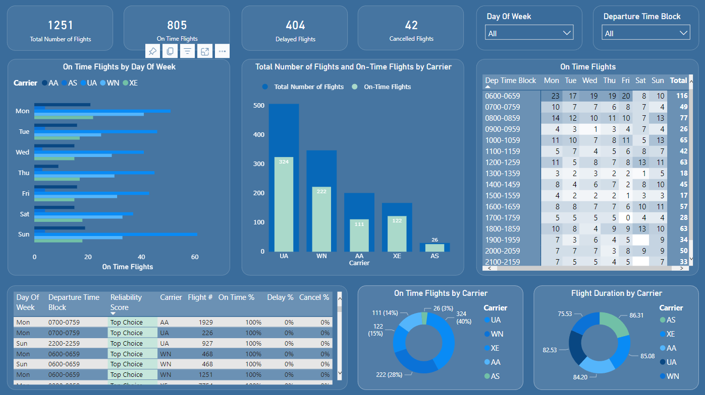
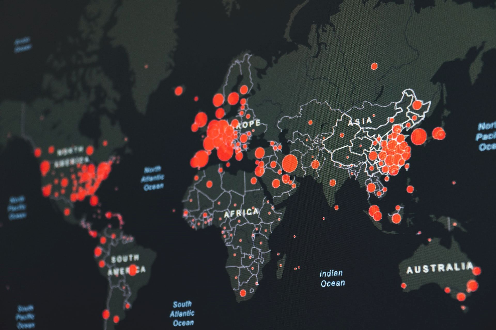

This project was a part of a job application process and involved creating a case study. The aim was to develop a
dashboard that would enable the client to compare and analyze flights between SF and LA to identify the most suitable
travel options for their requirements. For this case study, Excel and Power Bi were utilized, and by examining the
dataset from different perspectives and utilizing the analytical capabilities of these tools, meaningful conclusions and
valuable insights were derived for the client.


In this project, I designed and developed a dynamic and interactive dashboard in Tableau that tracks the progress of the
COVID-19 vaccination program globally. This dashboard provides a comprehensive overview of vaccination rates and distribution across different countries and regions.
With this dashboard, stakeholders and decision-makers can easily access key
information and make data-driven decisions to combat the ongoing COVID-19 pandemic.
In this project, I used Power BI to create an interactive dashboard that presents survey data of
professionals. The survey data was obtained from GitHub and included responses from a wide range of data
professionals across different industries and backgrounds. Through this project, I aimed to showcase my ability to utilize
Power BI's data visualization tools to create informative and engaging visualizations that would allow others to explore
the survey results and identify key trends and insights.
In this project, I utilized SQL to explore and analyze COVID-19 data. By querying and processing relevant data, I
gained valuable insights into the pandemic's impact on different regions and populations. Furthermore, I prepared the
data for visualization, which will be the focus of my next project.

In this project, I built on my previous work using SQL to analyze COVID-19 data by creating visualizations in Tableau. I
utilized the SQL queries I had developed to prepare the data for visualization and then created interactive dashboards
to effectively communicate key insights.

In this project, I worked with the Nashville Housing dataset from Kaggle to demonstrate my skills in SQL and data
cleaning. I used SQL queries to identify and address data inconsistencies, such as missing or incorrect values, and
standardized the data to improve its efficiency and ease of use. By cleaning the dataset, I was able to ensure that it
was ready for future analysis or machine learning applications. Through this project, I aimed to showcase my proficiency
in SQL and my ability to work with real-world datasets to create reliable and accurate data resources.

In this project, I worked with the Movies Industry dataset from Kaggle to perform correlation analysis using Python.
Specifically, I investigated the relationship between variables such as budget and revenue, and aimed to identify any
significant correlations. Through this project, I utilized various Python libraries and data visualization tools to
create clear and informative visualizations that would help others understand the relationships within the dataset. By
identifying key correlations, I aimed to provide insights into the factors that contribute to successful movies and
inform future decision-making within the movie industry.